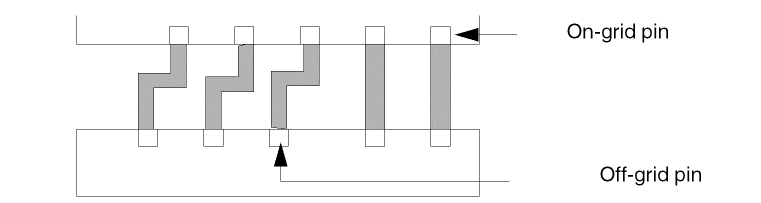
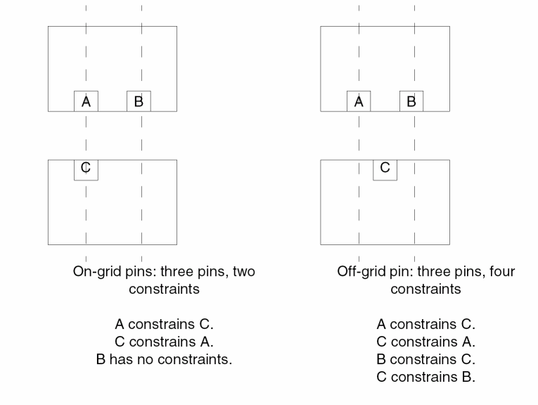
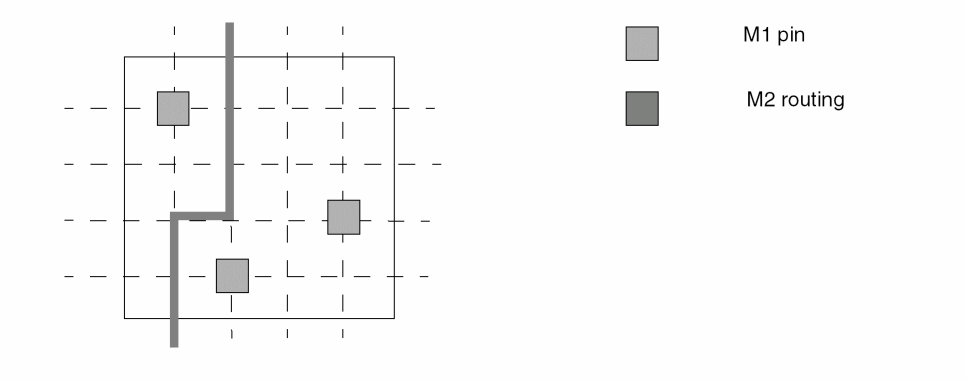

Guidelines for Designing Pins
This topic contains guidelines for designing pins so that you maximize the routability of the cells and improve the run time and memory performance of the router. The more porous the design, the easier it is for the router to make connections.
Guidelines to Optimize Pin Placement
Every pin should cover at least one grid intersection because the software connects most efficiently to pins at grid intersections. If you have off-grid pins, the software creates a pseudo-grid through the center of each off-grid pin.
Use the following guidelines to optimize pin placement:
- Place pins on-grid wherever possible.
- Ensure that off-grid pins follow spacing rules by using the pseudogrid point at the center of the pin geometry.
- Center the pin via on the routing grid for its layer.
- Place special pins in such a way so that they do not obstruct routing on an adjacent track. You can place special pins off-grid for this.
Innovus has gridless routers but they handle gridded pins better than off-grid pins. A pin is considered to be on-grid if it meets the following criteria:
- The pin rectangle is centered at the grid intersection.
- The pin rectangle encloses the grid intersection point on all four sides by half the minimum metal width of that pin shape layer. The grid intersection is from the x and y routing grid pitch for that layer. The router routes to the pin rectangle only at that grid intersection.
- The router only routes to the center of the off-grid pin port rectangles if this is legal.
The following figure shows a LEF standard cell with shapes similar to layout data.
Pin A has several off-grid shapes and one on-grid shape. Pin B has two off-grid polysilicon pin shapes. Pin O has one on-grid shape. The off-grid shapes slow down the router and lead to inefficient routing. Further, if the spacing rules for this example did not allow M1/M2 vias to be placed on pin A, the router would not be able to connect to Pin A. This could result in an inefficiently routed design.
Off-grid pins can affect your design in a number of ways. Some of these are listed below:
-
Large die size
The router creates jogs to compensate for pins that are not aligned. This forces the channels to expand vertically and increases the die size.
 -
Overconstrained design
The more constraints there are, the harder it is for the router. The following figure shows how one off-grid pin increases the number of constraints.
 -
Longer run-times
This design slows down the router significantly because the router is more constrained. Each off-grid track can interfere with adjacent tracks. -
Optimistic global router results
The global router might not recognize off-grid pins as blocking the routing track and, as a result gives you optimistic results.
Guidelines to Handle Special Pins
Special pins are pins routed by the special net router instead of the final router. Special pins have different shapes, depending on their function. On cells, you can have feedthrough or abutment special pins.
- Non-interference with adjacent grid lines.
-
Define special pins in the
SPECIAL NETSsection of the DEF file. - Place all power and ground feedthrough and abutment pins at the same axis on opposite sides of the cell.
- Position the power and ground feedthrough or abutment pins so that they align with corresponding pins in other cells.
- Avoid creating power and ground pins in M2, because M2 within the cell makes it harder to route over the cell.
- Define a shape property for power and ground pins with the value set to either feedthru or abutment.
- Set the same y offset for power and ground pins from the cell origin so that the FollowPins command works properly. You can specify the origin in the LEF file or use the default, which is the lower left corner.
Guidelines to Maximize Routing Resources
The more routing resources you have available, the easier it is for the router to connect. You must maximize the resources in your most constrained layer. In three-layer designs where M2 is vertical and M1 and M3 are horizontal, M2 is typically the most constrained layer.
The following are some suggestions:
-
Maximize pin accessibility.
Make cell pins as accessible as they can be by declaring the complete geometry of the pin as a pin. This will allow the router to connect to the best location on the pin as it sees fit, rather than forcing it to connect to a particular point.
Also, avoid having geometries on the same layer close to and around the pin, in effect, blocking it. This makes the router unable to make a connection to the pin.
Special care should be taken not to block access to pins through vias. For example, avoid M2 geometries too close to a M1 pin such that M1 to M2 via cannot be dropped in order to access the pin on M2. -
Stagger pins in the x and y directions.
Staggering pins provides additional vertical routing resources, as shown in the following figure:
If two or more pins are aligned vertically, then the vertical track going through the pins can become blocked, forcing some of the horizontal routing resources to be used to connect to the pins.
By staggering the pins in the vertical direction, especially at a pitch equal to integer multiples of the pitch of the vertical routing track, a higher degree of flexibility is given to the tool to connect to the pins in either direction. -
Minimize the number of geometries within the cell that are on the constrained layer.
Any geometry on the constrained layer within the cell becomes a blockage to routing in that layer. For three-layer designs where M2 is the vertical layer, you can maximize routing resources by creating internal cell geometries in M1 and polysilicon, and leave M2 and M3 for routing. -
Allow extra routing resources in the constrained layer.
In libraries for gate isolation base arrays that might be congested in M2, you can add extra M2 routing resources as padding. For example, a two-input NAND gate might be three tracks wide with every track obstructed by a pin. You can model this as at least four tracks wide to provide an extra track for routing. -
Do not add pieces of metal to provide extra connection points.
In some libraries, you add a piece of M2 to a pin to provide the router with an extra connection point if M1 is blocked. This is counter productive because unused M2 areas become blockages that limit the flexibility of the router. You do not have to add extra metal, because the router can drop vias to the pins.
Related Topics
Guidelines for Designing a Cell Library
Design IO, Corner Cells, and Blocks
Return to top